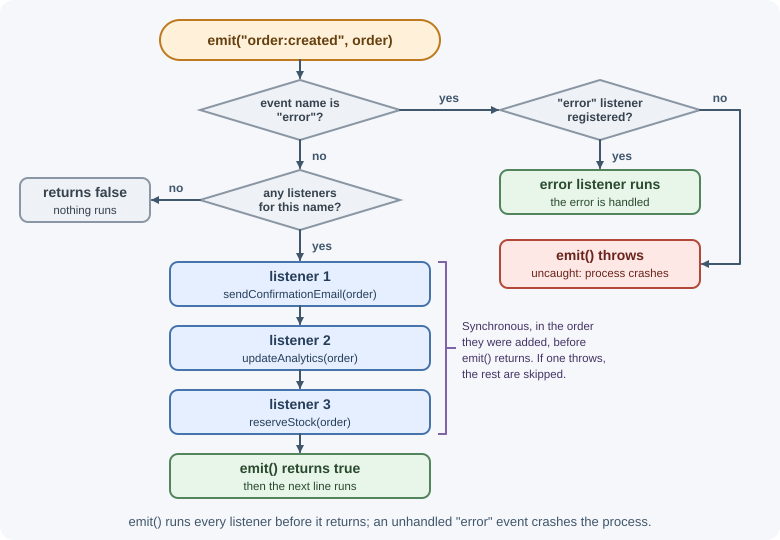
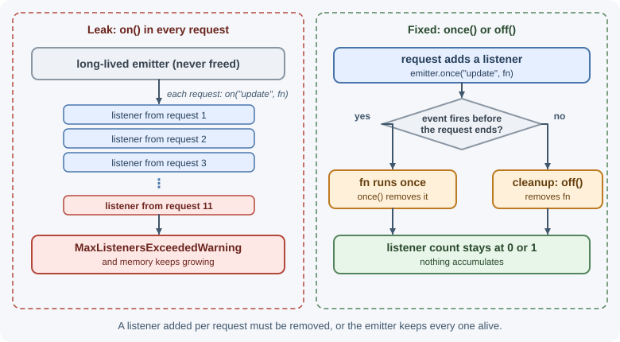

Events and EventEmitter¶
Many Node.js objects announce that something happened—a request arrived, a
chunk of data is ready, a connection closed—by emitting named events. The
EventEmitter class in node:events is the foundation for this. You
register listener functions for an event name, and the emitter calls them
when it emits that event.
Why it matters¶
Servers, streams, sockets, child processes, and the process object itself
are all event emitters. Using them correctly means knowing when listeners
run, how errors are reported, and how to avoid memory leaks from listeners
that are never removed. You can also use EventEmitter to decouple parts of
your own application.
Real-world usage¶
- node-redis, the official Redis client, reports connection problems
through an
errorevent. Its README warns that you must listen to it: without a listener, the error is thrown and the Node.js process exits. A brief network blip can therefore crash an app that never added the listener (node-redis README). - Mongoose connections inherit from
EventEmitterand emitconnecting,connected,disconnected, and other events when connectivity to MongoDB changes. Applications listen to these to log outages and report health (Mongoose docs: Connection events). - BullMQ job workers emit
completed,progress, andfailedevents. Applications attach listeners for logging and metrics without touching the job code (BullMQ docs: Workers).
Popular tools and providers: node:events itself; client libraries for
Redis, MongoDB, and queues that expose connection and job events; ws and
Socket.IO for event-based real-time messaging.
How it works¶
The observer pattern¶
EventEmitter implements the observer pattern (also called
publish/subscribe within one process): one object emits events, and any
number of listeners react to them without the emitter knowing who they are.

Core methods¶
| Method | What it does |
|---|---|
on(name, listener) / addListener |
Adds a listener that runs every time the event is emitted. |
once(name, listener) |
Adds a listener that runs once, then removes itself. |
off(name, listener) / removeListener |
Removes a specific listener (you need the same function reference). |
removeAllListeners([name]) |
Removes all listeners, optionally for one event. |
emit(name, ...args) |
Calls each listener with args; returns true if there were listeners. |
prependListener(name, listener) |
Adds a listener to the front of the list. |
prependOnceListener(name, listener) |
Like prependListener, but runs once. |
listenerCount(name) |
Number of listeners for an event. |
eventNames() |
Names of events that have listeners. |
setMaxListeners(n) |
Changes the leak-warning threshold for this emitter. |
Listeners run synchronously, in order¶
emit() calls every listener synchronously, in the order they were
added, before emit() returns. It does not schedule them for later.
import { EventEmitter } from "node:events";
const emitter = new EventEmitter();
emitter.on("ping", () => console.log("listener 1"));
emitter.on("ping", () => console.log("listener 2"));
console.log("before emit");
emitter.emit("ping");
console.log("after emit");
before emit
listener 1
listener 2
after emit
If a listener throws, the exception propagates out of emit() and later
listeners do not run. A listener that needs to do slow work should start
asynchronous work rather than block.
Inside a regular function listener, this refers to the emitter. Arrow
function listeners do not get their own this.
The special error event¶
The event name "error" has special behavior. If an emitter emits "error"
and no listener is registered, Node.js throws the error. In a server,
that usually crashes the process.
const emitter = new EventEmitter();
emitter.emit("error", new Error("boom")); // throws the error itself
Run as a script, Node.js prints throw er; // Unhandled 'error' event,
then Error: boom with its stack trace, and exits with code 1.
Always attach an error listener to emitters that can fail—streams,
sockets, servers, and child processes:
emitter.on("error", (error) => {
console.error("Emitter failed:", error.message);
});
Memory leaks and the max-listeners warning¶
Every listener is a reference that keeps its function (and anything it closes over) in memory as long as the emitter exists. Adding a listener on every request to a long-lived emitter, and never removing it, is a classic memory leak.
To help catch this, Node.js prints a warning when more than 10 listeners are added for the same event on one emitter:
(node:24884) MaxListenersExceededWarning: Possible EventEmitter memory leak
detected. 11 request listeners added to [EventEmitter]. MaxListeners is 10.
Use emitter.setMaxListeners() to increase limit
The number after node: is the process ID. Run with --trace-warnings to
also print the stack trace of the line that added the eleventh listener.
The warning does not stop anything; it is a hint. If many listeners are
legitimate, raise the limit with emitter.setMaxListeners(n). If not, find
where listeners are added and remove them with off() or use once().

Promise and async-iterator helpers¶
node:events provides helpers that connect events to async/await:
events.once(emitter, name)returns a promise that fulfills with an array of the event's arguments the next time it is emitted. It rejects if the emitter emits"error"first.events.on(emitter, name)returns an async iterator that yields each emission's arguments.
import { once } from "node:events";
import { createServer } from "node:http";
const server = createServer((req, res) => res.end("ok"));
server.listen(3000);
await once(server, "listening"); // wait until the server is ready
console.log("Server is listening");
Both accept an AbortSignal so you can stop waiting.
Extending EventEmitter¶
Your own classes can extend EventEmitter to emit domain events:
import { EventEmitter } from "node:events";
class Job extends EventEmitter {
async run() {
this.emit("start");
try {
for (let percent = 25; percent <= 100; percent += 25) {
await new Promise((resolve) => setTimeout(resolve, 100));
this.emit("progress", percent);
}
this.emit("done");
} catch (error) {
this.emit("error", error);
}
}
}
const job = new Job();
job.on("progress", (percent) => console.log(`${percent}%`));
job.once("done", () => console.log("Job finished"));
job.on("error", (error) => console.error(error));
job.run();
EventTarget in Node.js¶
Node.js also implements the web-standard EventTarget and Event
classes used in browsers. APIs that follow web standards, such as
AbortSignal, use EventTarget with addEventListener. The main
differences: EventTarget listeners receive an Event object, there is no
special "error" behavior, and adding the same listener twice has no
effect. Node.js core modules mostly use EventEmitter.
Where Node.js uses events¶
| Object | Example events |
|---|---|
http.Server |
request, connection, listening, close, error |
http.IncomingMessage (request) |
data, end, close, error |
net.Socket |
connect, data, end, timeout, close, error |
| Readable streams | data, end, readable, close, error |
| Writable streams | drain, finish, close, error |
process |
exit, beforeExit, uncaughtException, unhandledRejection, SIGINT, SIGTERM, warning |
ChildProcess |
spawn, exit, close, error, message |
When to use and when not to use¶
Use EventEmitter when:
- Something happens many times and several independent parts may want to react: connection state changes, progress updates, data arriving.
- You want to keep a module free of knowledge about who reacts to it, such as audit logging or metrics on domain events within one process.
- You build a low-level object (a client, a parser) that follows Node.js conventions.
Do not use it when:
- There is exactly one result: return a promise instead.
- The work must happen reliably or on another server: use a message queue or background job; in-memory events vanish on a crash.
- You need ordered, flow-controlled data: use a stream, which adds backpressure on top of events.
- Code must also run in browsers: prefer
EventTarget.
| Need | Use | Why |
|---|---|---|
| One async result | Promise / async function |
Settles once, works with await and try/catch |
| Many notifications, same process | EventEmitter |
Any number of listeners, synchronous delivery |
| A flow of data with backpressure | Stream | Pauses the producer when the consumer is slow |
| Work that must not be lost | Message queue or job queue | Survives restarts; other servers can consume it |
| Browser-compatible events | EventTarget |
Web standard; same API in browsers |
Practical examples¶
Decoupling side effects¶
import { EventEmitter } from "node:events";
export const appEvents = new EventEmitter();
// orders.js
export async function createOrder(data) {
const order = await saveOrder(data);
appEvents.emit("order:created", order); // the service doesn't know who listens
return order;
}
// listeners.js
appEvents.on("order:created", (order) => {
sendConfirmationEmail(order).catch((error) => {
console.error("Email failed", error); // handle async errors inside the listener
});
});
In-process events are not a message queue
Events emitted this way live only in memory. If the process crashes before a listener finishes, the work is lost, and other server instances never see the event. For work that must happen reliably, use a message queue or background jobs.
Removing a listener correctly¶
function onData(chunk) {
console.log("received", chunk.length);
}
socket.on("data", onData);
// later
socket.off("data", onData); // works: same function reference
socket.on("data", (chunk) => console.log(chunk.length));
socket.off("data", (chunk) => console.log(chunk.length)); // does nothing:
// a new arrow function is a different reference
Waiting for an event with a timeout¶
import { once } from "node:events";
try {
const [message] = await once(worker, "message", {
signal: AbortSignal.timeout(5000),
});
console.log("Worker replied:", message);
} catch (error) {
console.error("No reply within 5 s or worker failed:", error.message);
}
On timeout, once() rejects with an AbortError ("The operation was
aborted"), not the TimeoutError that fetch uses. The timer behind
AbortSignal.timeout() does not keep the process alive by itself. Here the
worker keeps it alive, but in a script with nothing else running, Node.js
can exit before the timeout ever fires.
Best practices¶
- Always register an
errorlistener on emitters that can fail. - Use
once()for one-time events such asreadyorlistening. - Remove listeners you add for a temporary purpose, especially on long-lived emitters; keep a reference to the function so you can.
- Handle errors inside async listeners; a rejected promise from a listener
is not caught by
emit(). - Use clear, namespaced event names such as
order:created. - Prefer
events.once()with anAbortSignalover hand-written promise wrappers. - Use a queue, not in-memory events, for work that must survive restarts or span multiple servers.
In production¶
- A dependency hiccup crashes the process.
- Symptom: a short Redis or database network blip is followed by every instance restarting.
- Detect: crash logs show
Unhandled 'error' eventfollowed by an error from the client library, such as a connection reset. - Cause: no
errorlistener on the client, socket, or stream. - Fix: attach an
errorlistener to every client and stream you create, log the error, and let the library reconnect. - Memory grows with traffic.
- Symptom: heap usage rises steadily, and
MaxListenersExceededWarningappears in the logs. - Detect:
emitter.listenerCount(name)reported in a metric keeps rising, and heap snapshots show many copies of the same closure. - Cause: a listener added to a long-lived emitter (the process, a database client) on every request and never removed.
- Fix: use
once(), or remove the listener withoff()when the request ends. Never "fix" it withsetMaxListeners(0). - One listener breaks a request.
- Symptom: a request fails with an error from analytics code, unrelated to its own logic.
- Detect: the stack trace shows the error thrown inside
emit(). - Cause: listeners run synchronously; a throw in one propagates to the
code that called
emit()and skips the remaining listeners. - Fix: wrap listener bodies in
try/catch, and push slow or risky work to a queue. - Side effects lost on deploy.
- Symptom: some customers never receive confirmation emails, usually around deploys.
- Detect: the count of
order:createdevents in logs is higher than the count of emails sent. - Cause: the email was triggered by an in-memory event, and the process was stopped before the listener finished.
- Fix: write the work to a durable queue (or an outbox table) in the same flow that creates the order.
Important terminology¶
- Event emitter: An object that emits named events and calls registered listeners.
- Listener (handler): A function called when an event is emitted.
- Emit: To trigger an event and call its listeners with arguments.
- Observer pattern: A design where subscribers react to events from a subject without tight coupling.
errorevent: A special event that throws if no listener exists.- MaxListenersExceededWarning: A warning that suggests a possible listener leak.
- EventTarget: The web-standard event interface, also available in Node.js.
Common mistakes and misconceptions¶
- "
emit()is asynchronous." Listeners run synchronously beforeemit()returns. - Forgetting the
errorlistener, causing a crash on the first failure. - Adding listeners inside request handlers to a shared emitter without removing them.
- Trying to remove an anonymous function with
off(). - Silencing the max-listeners warning with
setMaxListeners(0)instead of fixing the leak. - Using in-process events for durable work that must not be lost.
Revision questions¶
- What is the difference between
on,once, andprependListener? - Are listeners called synchronously or asynchronously? What happens if one throws?
- Why is the
errorevent special? - What does the max-listeners warning tell you, and how should you respond?
- How do
events.once()andevents.on()help with async code? - Why are in-process events unsuitable for work that must not be lost?